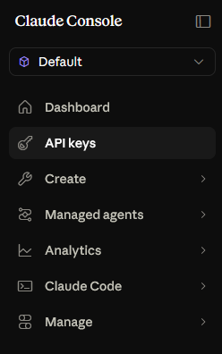
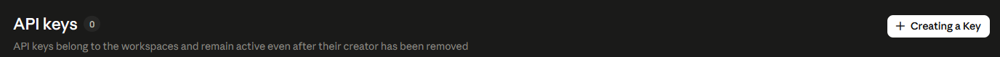
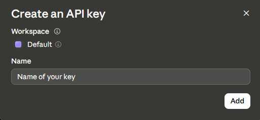
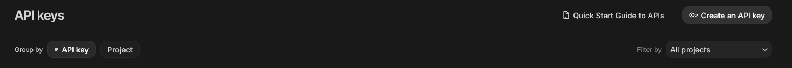
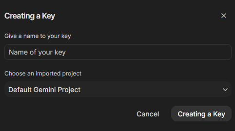
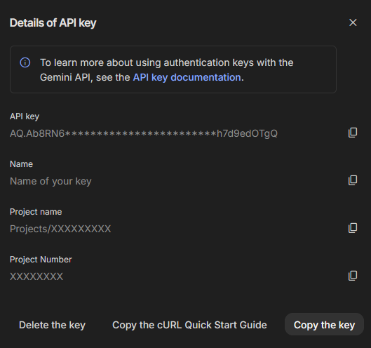

翻译提供商
DeepL
用途：高质量机器翻译（支持正式程度调整）。
- 访问 https://www.deepl.com/pro-api，注册 API 服务。在 Developer 套餐卡片中，选择
Sign up for free。DeepL 会要求你验证邮箱，随后完成支付卡验证。支付卡验证用于核实账户，但 Developer 套餐不收费。免费的 Developer 套餐包含 1,000,000 个字符的一次性额度。

- 打开 https://www.deepl.com/your-account/keys（Account ▸ API Keys），并复制你的
Authentication Key。

- 将其粘贴到 SubVox Pro 中（Settings ▸ DeepL）。SubVox Pro 会自动处理 Free 和 Pro 端点的选择。
帮助：https://support.deepl.com/hc/en-us/articles/360020695820-API-key-for-DeepL-API
Google Cloud Translation
用途：机器翻译。
- 访问 https://console.cloud.google.com，打开 Google Cloud Console，并创建（或选择）一个项目。新注册的 Google Cloud 账户可获得 $300 试用额度（90 天），且 Cloud Translation 包含每月 500,000 个免费字符。即使使用免费套餐，也需要结算账号。
- 在 APIs & Services ▸ Library 中，搜索 Cloud Translation API 并点击 Enable。
- 在 APIs & Services ▸ Credentials 中，点击 Create credentials ▸ API key。复制该密钥（也可以将其限制为仅用于 Cloud Translation API）。
- 将其粘贴到 SubVox Pro 中（Settings ▸ Google Translate）。
提示：设置配额/预算提醒，以免试用额度用尽后产生意外费用。
OpenAI
用途：语音转文字、LLM 翻译（以及跨语言的词级样式传递）和语音合成配音。一个密钥即可支持这三项功能。
- 在 https://platform.openai.com 创建账户，或使用现有 OpenAI 账户登录。

- 在项目侧边栏中，打开 API Keys。

- 点击 Create new secret key。

- 如有需要，为密钥命名，确保选中正确的项目，选择所需的权限，然后点击 Create secret key。

- 立即复制该密钥。OpenAI 仅会显示一次完整的密钥；关闭此对话框后，将无法再次查看完整密钥。

- 通过 https://platform.openai.com/settings/organization/billing/overview 充值预付额度。也可以打开账户菜单，进入 Organization settings 或 Profile settings，然后在设置侧边栏中选择 Billing。


- 在 Billing 概览页面，点击 Add to credit balance。API 调用费用将从该余额中扣除。

- 输入要充值的金额，选择或添加支付方式，然后点击 Continue。平台显示的最低充值金额通常为 $5。

- 将密钥粘贴到 SubVox Pro 中（Settings ▸ OpenAI）。在翻译面板中选择模型。进行配音时，在 Text-to-Speech 选项卡中选择 OpenAI 作为提供商，然后选择模型： gpt-realtime-2.1-mini（10 种音色，遵循 voice direction），通过 Realtime API 调用。现有模型选择将自动迁移。已停用的音色 fable、nova 和 onyx 需要重新选择音色。Realtime 会根据逐字照读指令朗读台词；请核对生成的对白。 Realtime 音频输出费用约为 $0.024/分钟，另加文本词元费用（每百万词元：输入 $0.60 / 输出 $2.40）。 Batch 估算包含音频和文本，按每秒 14 个字符、每词元 4 个字符计算；voice direction 和语速可能会影响计费金额。进行转写时，在 Speech-to-Text 选项卡中选择 OpenAI，然后选择模型。
Transcription 模型——选择前请阅读此内容。
- **
gpt-transcribe：当前用于已录制音频的模型。API 返回的文本不包含词级时间戳； SubVox Pro 会根据音频片段估算时间信息。如果时间定位很重要，请使用本地对齐或提供词级时间戳的提供商。whisper-1、gpt-4o-transcribe和gpt-4o-mini-transcribe** 的已保存选项将迁移至gpt-transcribe；这将移除此前由whisper-1提供的词级时间戳。- 其他提供商（AssemblyAI、Gladia、Deepgram、Speechmatics、ElevenLabs、Rev AI、本地 Whisper 和 Parakeet）会直接返回带标点的词级时间信息：如果时间定位很重要，请优先选用这些提供商。
转写端点的上传上限为 25 MB。请参阅 OpenAI 弃用说明。
OpenAI 的使用政策要求你告知玩家，他们听到的声音是由 AI 生成的，并非真人发声——例如在游戏的制作人员名单或商店页面中注明。TTS 定价：https://openai.com/api/pricing
Anthropic (Claude)
用途： LLM 翻译（以及词级样式传递）。
- 在 https://console.anthropic.com 创建账户，或使用现有 Anthropic 账户登录。

- 在使用 API 之前购买使用额度。Anthropic 采用预付费模式；若无额度，API 请求将失败。控制台提供较低的起充金额，通常为 5 USD。

- 在 Claude 控制台侧边栏中，打开 API keys。

- 点击 Create key。

- 选择工作区，如有需要，为密钥命名，然后点击 Add。

- 立即复制生成的密钥。Anthropic 提示，离开此界面后将无法再查看完整的密钥。

- 将其粘贴到 SubVox Pro 中（Settings ▸ Claude）。
Google (Gemini)
用途： LLM 翻译和语音合成配音（Gemini 音色）——最简单的免费选项（无需启用计费）。一个密钥即可支持这两项功能。
- 访问 https://aistudio.google.com，打开 Google AI Studio，并使用 Google 账户登录。

- 直接访问 https://aistudio.google.com/app/apikey，打开 API keys，然后点击
Create an API key。

- 如有需要，为密钥命名，选择或创建一个项目，然后创建密钥。

- 从详细信息面板中复制 API 密钥。

- 该密钥随后会显示在 API 密钥列表中，你可以在列表中复制密钥、查看使用情况，或稍后配置计费。

- 将其粘贴到 SubVox Pro 中（Settings ▸ Gemini）。进行配音时，在 Text-to-Speech 选项卡中选择 Gemini 作为提供商：它提供 30 种多语言音色（Kore、Puck、Leda……）以及 voice direction 按钮。可选模型有三种：gemini-3.1-flash-tts-preview（默认，最自然）、 gemini-2.5-flash-preview-tts（计费时价格减半）和 gemini-2.5-pro-preview-tts（无免费套餐——需要启用计费）。
免费套餐无需启用计费，但受请求速率限制；各模型的限制在 AI Studio （Rate limit 页面）中显示。语音合成的限制最为严格——每分钟和每天仅限少量请求。当 Google 指定等待时间时，SubVox Pro 会等待并重试；一旦每日配额用尽，便会显示明确提示并停止操作。在密钥对应的项目中启用计费即可放宽这些限制； SubVox Pro 中无需进行其他更改。在免费套餐下，Google 可能会使用你的提示词来改进其产品。
DeepSeek
用途：低成本 LLM 翻译（兼容 OpenAI 的 API）。
- 在 https://platform.deepseek.com 创建账户，或使用现有 DeepSeek 账户登录。
- DeepSeek 采用预付费模式：在平台中打开 Top up，并在使用 API 前充值。若无余额，API 请求将失败。
- 打开 API keys（https://platform.deepseek.com/api_keys）并点击 Create new API key。为其设置一个易于识别的名称，例如
SubVoxPro，然后立即复制该密钥——完整密钥仅显示一次。 - 将其粘贴到 SubVox Pro 中（Settings ▸ DeepSeek）。在翻译面板中选择模型。